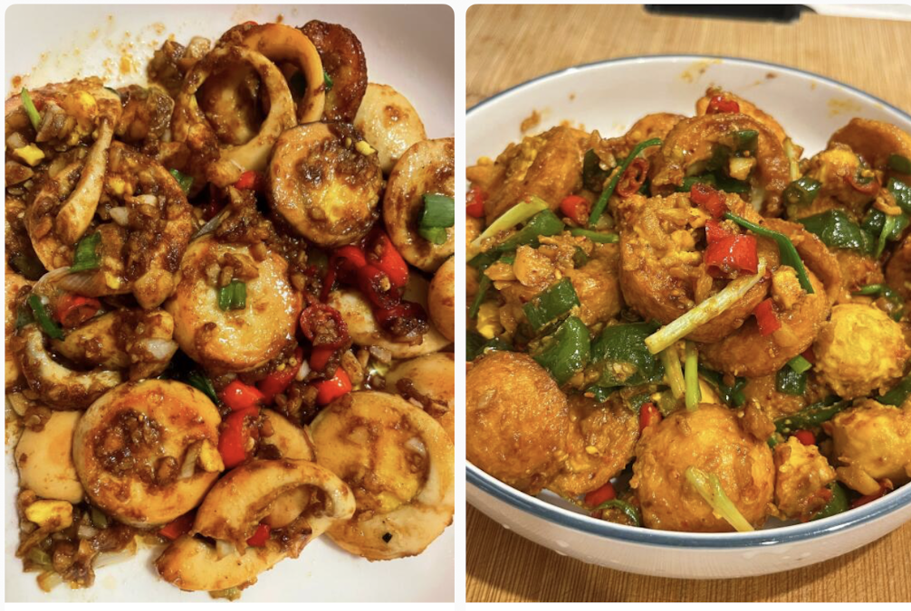
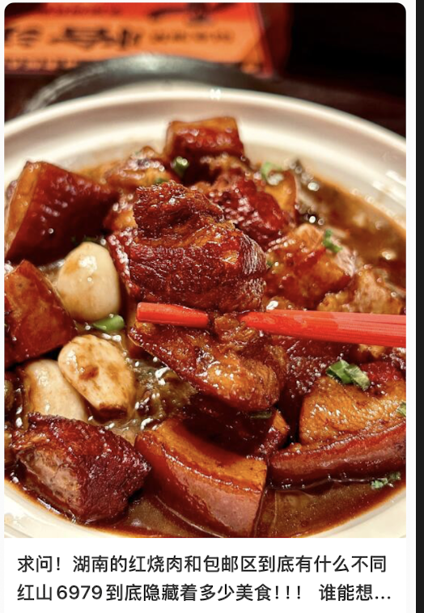
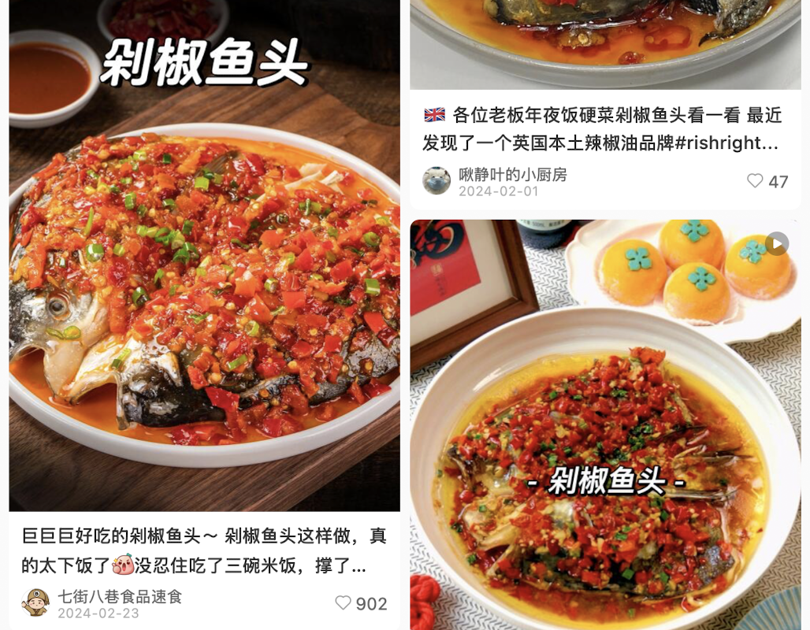
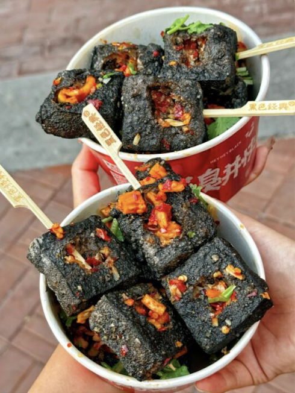

Hunan Cuisine
Hunan cuisine, also known as Xiang cuisine, is famous for its hot and spicy flavors, fresh aroma, and deep color. It is one of the Eight Culinary Traditions of China.
Representative Dishes
1. Golden Coin Eggs (金钱蛋)

Steps:
- Boil eggs until fully cooked, then peel and slice into thick rounds.
- Pan-fry the egg slices until golden on both sides.
- In a separate pan, stir-fry garlic, chili peppers, and soy sauce.
- Add the fried egg slices to the sauce and mix well.
- Serve hot, garnished with green onions.
2. Chairman Mao’s Red-Braised Pork (毛氏红烧肉)

Steps:
- Cut pork belly into cubes and blanch in boiling water.
- Caramelize sugar in a wok, then add the pork.
- Pour in soy sauce, ginger, star anise, and cooking wine.
- Simmer for 1 hour until tender.
- Serve with a rich, glossy sauce.
3. Steamed Fish Head with Chopped Chili (剁椒鱼头)

Steps:
- Clean and halve a fresh fish head.
- Top with chopped red chili peppers and salt.
- Steam for about 10 minutes.
- Drizzle with hot oil and soy sauce.
- Garnish with green onions and serve.
4. Stinky Tofu (臭豆腐)

Steps:
- Ferment tofu for a few days.
- Deep fry until golden and crispy.
- Top with chili sauce and pickled vegetables.
- Serve hot with garlic dipping sauce.